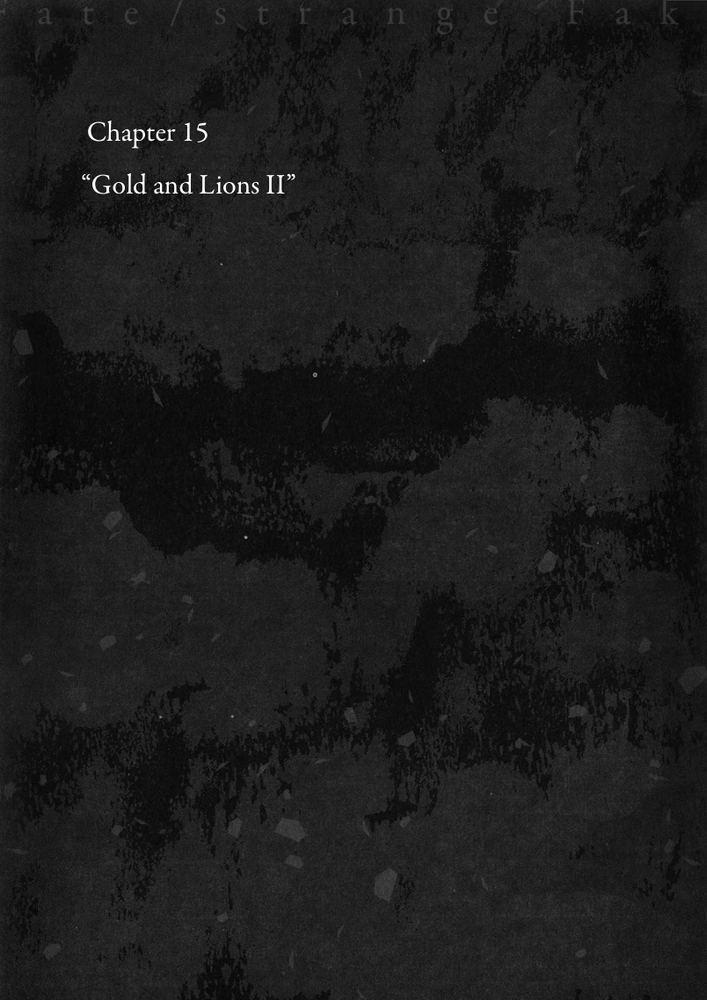
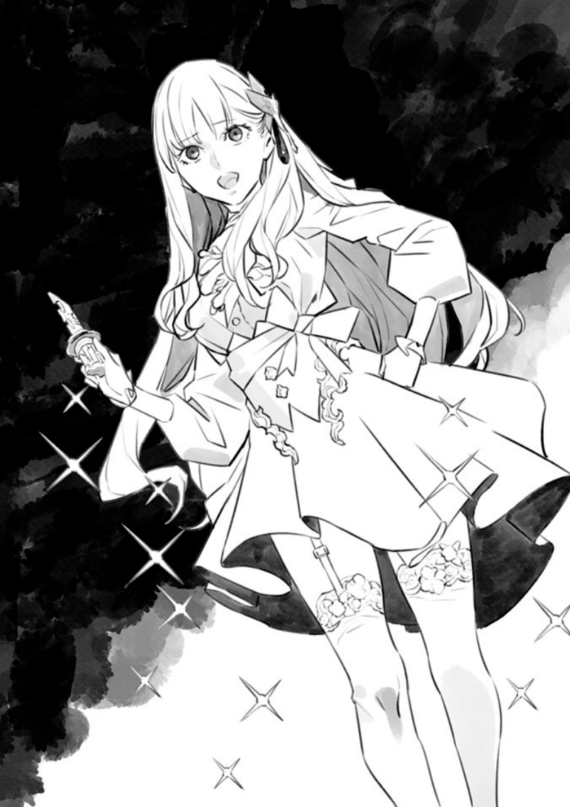

"Ouro e Leões II"
O Rei dos Heróis trajado em armadura dourada, Gilgamesh, o "juiz", ainda permanecia onde começara, no telhado da igreja.
O telhado da igreja estava crivado de Fantasmas Nobres e tinha desabado em alguns pontos, mas a barreira erguida ali devia ser poderosa, porque ele continuava mal reconhecível como telhado.
Para um observador casual, aquilo pareceria uma bela dança.
Tiné e os outros magos que de fato acompanhavam a cena por feitiços de visão à distância estavam cativados pela visão de Saber dançando, com uma velocidade incrível, no vão entre a vida e a morte.
Era um confronto entre reis, mas certamente não era igualitário. O rei dourado permanecia acima, enquanto o outro rei lutava para desalojá-lo daquela altura. Vista pelo outro lado, a cena parecia um rei maior passando julgamento sobre um menor.
Mas era justamente por isso que ele avançava. Se ambos eram reis, então qual deles era superior mudaria conforme o tempo e as circunstâncias. A batalha dos dois era uma disputa por essa altura. Poderia até ser chamada da "guerra" de menor escala do mundo, travada entre as Origens Espirituais de dois reis.
Naturalmente, um daqueles reis estava armado com os inumeráveis Fantasmas Nobres que seus súditos haviam criado e que ele colecionara. O outro, em contraste, tinha apenas sete "companheiros".
O rei dourado e juiz lançava ataques sobre Saber sem jamais baixar a guarda. Ainda assim, o rei que um dia fora chamado de "Coração de Leão" continuava avançando, levando a si mesmo a velocidades cada vez maiores enquanto escapava da morte por um fio.
Velocidade sobre-humana.
Era comum que um combate entre Espíritos Heroicos parecesse sobre-humano. Mesmo levando isso em conta, porém, a rapidez de Saber era extraordinária.
Velocidade advinda de suas capacidades fundamentais como Espírito Heroico.
Velocidade aumentada por magia.
Velocidade que só poderia ser atribuída a algum tipo de "proteção divina" ligada aos feitos de sua lenda e concedida a ele pelo Trono.
Combinando tudo isso, ele se lançava pelo conjunto de prédios transformado em seu campo de batalha com uma velocidade singular até mesmo para um Espírito Heroico, circulando enquanto encurtava a distância lenta, mas firmemente.
O avanço do Coração de Leão, depois de iniciado, era como um vendaval ceifando terra e mar. A velocidade sem par de sua investida era tamanha que a lenda dizia que "somente um general abençoado com proteção contra o vento conseguira afinal detê-la".
Incrivelmente, o Coração de Leão, que se dizia ter atravessado o campo de batalha a três vezes a velocidade de uma investida comum, por fim se aproximou o bastante para que sua espada alcançasse o oponente.
"Então você tem a insolência de se pôr diante de mim."
Quase como se declarasse que estava apenas começando, o rei dourado saltou para trás enquanto disparava sua Gate of Babylon, tentando abrir mais distância entre si e Saber.
Mas esse esforço deu a Saber a oportunidade perfeita.
"Ex...calibur!"
A espada de Saber brilhou, e o arco de seu golpe se transformou numa gigantesca faixa de luz que voou contra o Archer dourado suspenso no ar.
"Não tão rápido!"
Gilgamesh materializou incontáveis escudos diante de si, dispersando a faixa de luz.
"Pensar que ousaria me atacar com uma mera imitação de uma relíquia do planeta. Não estivéssemos em plena sua provação, tamanha tolice mereceria morte, vira-lata! ...Hm?"
Quando a luz espalhada se dissipou e a infinidade de escudos flutuantes se dispersou, Saber já não estava mais visível diante do rei dourado.
Ao aterrissar, ele sentiu uma imensa Energia Mágica vindo de trás, mais abaixo, no declive do telhado da igreja. O Archer dourado virou o olhar, olhos semicerrados, e viu Saber com a espada preparada para golpear.
"Ex...calibur!"
Uma segunda faixa de luz foi disparada ladeira acima. Ela foi bloqueada pelos incontáveis escudos, como a primeira... mas este golpe era uma ordem de grandeza mais poderoso. Empurrou os escudos para trás, erguendo o rei dourado vários metros no ar.
"Como ousa..."
O rei dourado viu, pelas brechas na parede de escudos, que Saber segurava um dos Fantasmas Nobres que ele próprio disparara.
"Eu não disse que ia pegá-los emprestados?"
Ainda agarrado à espada longa, Saber escorregou num instante para bem debaixo do oponente aéreo e fez a lâmina ser envolta em radiância mais uma vez.
Da primeira vez que libertara o verdadeiro nome de seu Fantasma Nobre, a espada decorativa que empunhava de início se despedaçara com um único golpe. O Fantasma Nobre envolto na aura da Era dos Deuses, porém, permanecera intacto após sua segunda liberação do Nome Verdadeiro e conservara suas propriedades como Fantasma Nobre.
Ele liberou Energia Mágica numa terceira faixa de luz.
O rei dourado implantou escudos abaixo de si e bloqueou o ataque, mas foi empurrado ainda mais alto.
Então veio a quarta faixa de luz.
Sem dar ao adversário tempo algum para se recompor, Saber emendou uma quinta e uma sexta lâminas de luz, lançadas para o céu desde o telhado da igreja.
Mais aterrador ainda, o intervalo entre os golpes diminuía sem parar. Quando já passara do vigésimo corte, eles haviam se tornado uma faixa maciça e contínua de luz, disparando da terra contra o céu noturno.
Como se dissesse que aquilo também era, ao mesmo tempo, uma série infinita de golpes e um único ataque sem fim.
Vários Minutos Antes, Estacionamento Frontal do Hospital
Um pouco antes.
No estacionamento entre o hospital e a Rua Principal.
A área havia sido esvaziada, então quase não havia carros estacionados naquele espaço moderadamente amplo, e não existia obstáculo algum até a entrada do hospital, onde John fora arremessado.
O ataque contra John levou imediatamente à ação todos os policiais que ainda tinham força de sobra. Cada um empunhava um Fantasma Nobre diferente. Fantasmas Nobres "falsos", meras relíquias que haviam perdido seu Mistério e sua Energia Mágica originais, mas cujas lendas tinham sido reescritas por Caster.
Seria justo dizer que atacavam usando todo truque de que conseguiam se lembrar, fintas, ataques-surpresa a partir de pontos cegos e mais. Seria até justo dizer que o trabalho de equipe deles havia melhorado desde a luta contra Assassin na delegacia.
E, ainda assim, Archer, depois de roubar o Fantasma Nobre de Berserker e ganhar o poder de um demônio, nem sequer fazia esforço para se esquivar ou aparar os ataques com sua arma. Ele recebia de frente todas as lâminas e projéteis disparados contra si, e nada parecia surtir efeito.
"Merda... Ele é igual àquele Apóstolo Morto, o Jester...?" rosnou um dos oficiais.
As lembranças do momento em que foram esmagados na delegacia passaram diante de seus olhos. Diante do que se tornava uma repetição daquela derrota, os membros do Clã Calatin nem cogitaram fugir. Se recuassem ali, perderiam sua razão de existir chamada "justiça".
Como John, eles carregavam consigo as palavras quase hipnóticas de seu chefe. Dito isso, uma morte honrosa não era o que queriam. Continuavam pensando em maneiras de parar o monstro diante deles.
Enquanto pensavam, o Archer agora grotesco avançava.
Mas todo ataque que eles direcionavam a seus pontos vitais era detido pelo pano que ele usava. Quando atacavam, em contrapartida, seus braços e flancos expostos, sentiam os golpes acertarem, mas nunca conseguiam chegar ao nível de um ferimento efetivo.
Além do pano que anulava por completo seus ataques, as especificações do corpo nu dele também deviam ser extraordinárias. Considerando que ainda absorvera o poder do demônio, embora os policiais não entendessem exatamente o que havia acontecido, supuseram que sua resistência e sua tolerância à Energia Mágica também haviam melhorado.
Nesse caso, o inimigo diante deles tinha alguma fraqueza?
Enquanto as palavras "desista" passavam pela cabeça dos oficiais, o arqueiro grotesco continuava avançando passo a passo.
"...?
Por que ele simplesmente não cai matando em cima da gente?" perguntou um oficial. "Pois é", respondeu outro, "ele provavelmente poderia tirar todo mundo do caminho num instante..."
Foi então que uma mulher que observava friamente a situação a certa distância, Vera Levitt, ajudante de ordens do chefe de polícia e, na prática, uma das líderes do Clã Calatin, disse:
"Ele provavelmente está em guarda."
Ela era uma maga de verdade, além de policial.
Embora tivesse nascido como a filha mais nova de uma linhagem de magos, os Circuitos Mágicos de sua irmã mais velha eram fracos, e por isso ela fora criada por sua mãe, que carregava o Brasão Mágico da família. A irmã mais velha, Amelia, trabalhava em Snowfield como médica, ainda ignorante a respeito do mundo da magia.
Como sua linhagem cooperava na condução daquela Guerra do Santo Graal, Vera, como herdeira, entrara na guerra depois de herdar uma parte do Brasão Mágico de sua mãe. Era uma sucessão incompleta, já que o transplante do Brasão ainda não estava concluído, mas sua força se destacava dentro do Clã Calatin, e não seria exagero chamá-la de braço direito do chefe.
Sua ação seguinte foi tirar do cinturão de equipamentos um pequeno tubo de ensaio de vidro que destoava de seu equipamento moderno. Ela o lançou diante do arqueiro inimigo e atirou nele com o revólver de decoração peculiar que tinha na mão.
A bala perfurou o tubo de ensaio com precisão. Um instante depois, uma cortina de fumaça se espalhou por uma vasta área.
E não era uma cortina de fumaça comum, mas uma carregada de Energia Mágica de natureza aleatoriamente mutável. Algo como interferência para a percepção de Energia Mágica.
Observando a fumaça densa, que naturalmente também lhe obscurecia a visão, se espalhar, o arqueiro murmurou em voz baixa:
"...Impudência."
Então moveu o corpo enorme num grande salto, evitando a fumaça.
Vera havia lido a situação corretamente.
O arqueiro grotesco, Alkeides, tinha cautela não com a força policial, mas com outros fatores: Saber, que surgira sem aviso, e o Rei dos Heróis, que entrara em combate com ele. Por ora, eles lutavam entre si, mas não havia como saber quando voltariam seus ataques contra ele. Ele também podia sentir outra Origem Espiritual de Espírito Heroico do lado de Saber, e a presença do monstro que interrompera seu primeiro ataque ao hospital com um "escudo de água" não havia desaparecido.
Aquilo não era um duelo a ser travado com honra; era uma confusão sem fim em que era preciso enganar os oponentes e não se podia dar sequer a menor abertura às próprias costas.
Alkeides entendia isso. Poderia massacrar num instante a força policial espalhada à sua volta e que o atacava, mas, para fazer isso sem deixar uma abertura, teria de proceder com cuidado. Isso porque a força policial possuía mais que um certo nível de poder. O que havia conquistado, a resolução de arriscar a vida, não era algo vazio.
Havia vinte e cinco policiais no local. O restante permanecia na delegacia, guardando o chefe e reunindo informações. O cão infernal do arqueiro, Cérbero, surgira justamente quando eles estavam prestes a despachar uma equipe avançada ao quarto do hospital que era seu alvo, então nenhum deles havia conseguido chegar lá ainda.
"Quantos mandamos para o quarto de Kuruoka Tsubaki?"
"Se o Servo que possui Kuruoka Tsubaki for hostil, um grupo pequeno só vai morrer em vão", sussurrou Vera sua opinião a uma policial com um Fantasma Nobre em forma de arco. "Eu gostaria de ter mandado Berserker, que conseguiria dar conta disso sozinho, mas..."
Berserker sofrera danos graves em sua Origem Espiritual e provavelmente havia se retirado com a ajuda dos Selos de Comando de Flat.
"...Se o Servo é capaz de entender que Kuruoka Tsubaki está sendo alvejada, então deve agir para proteger sua Mestre. O fato de ainda não ter se retirado do hospital significa que ou não percebeu o que está acontecendo, ou não pretende protegê-la... ou está confiante de que pode protegê-la sem se mover."
Vera, pensando que a última hipótese seria preferível, produziu mais alguns tubos de ensaio e os espalhou ao redor. Assim que os tubos, arremessados com a ajuda da magia, voaram pelo ar e cobriram uma grande área, tiros os estilhaçaram todos, espalhando mais fumaça pelo lugar.
Vera estava prestes a mandar alguém reconhecer o quarto do hospital, aproveitando o atraso, quando...
"Um esforço desperdiçado."
O Archer grotesco bateu as asas demoníacas que cresciam de suas costas, levantando à sua volta um vento carregado de densa Energia Mágica. O vento, portando uma Energia Mágica sinistra, formou vários pequenos redemoinhos e começou a apanhar a fumaça como se a devorasse.
"Como é que a gente lida com essa merda...?" perguntou um dos oficiais, com a face repuxando.
O desespero começou a se espalhar pelos rostos dos policiais... quando uma figura solitária atravessou em disparada a cortina de fumaça.
"Pare!
Não adianta!" gritaram os oficiais, tentando detê-la. Eles não conseguiam ver com clareza seu rosto através dos redemoinhos e do rastro de fumaça, mas davam para notar que usava o mesmo uniforme deles.
Alkeides julgou aquilo uma investida imprudente.
Não importava o tipo de ataque que o policial em aproximação tentasse, nada surtiria efeito contra ele. Se atacasse com os punhos nus, o golpe ignoraria a proteção da pele do Leão de Nemeia, mas, nesse caso, não o arranharia nem um pouco, a menos que estivesse carregado com uma imensa quantidade de Energia Mágica.
Se sacasse o arco, as duas mãos ficariam ocupadas por um instante. Isso, obviamente, apresentaria uma abertura aos outros Espíritos Heroicos. O Rei dos Heróis, em particular, era capaz de lhe mandar um golpe letal mesmo enquanto trocava espadas com Saber. Até um "tiro perdido" poderia se provar fatal se por acaso atingisse uma brecha na pele do Leão de Nemeia.
Se ao menos ainda possuísse o Fantasma Nobre que lhe concedia doze vidas, deixado para trás por sua metamorfose, provavelmente não teria dado maior importância a isso e puxaria o arco com toda a força... mas seu estado atual não permitia que deixasse uma abertura dessas.
Nesse caso, decidiu, bastaria afastar o atacante com um único golpe de braço, como fizera com aquele primeiro e bravo oficial cujo pescoço quebrara.
Alkeides ergueu o braço e esperou o policial oculto pela escuridão e pela fumaça se aproximar.
Então, naquele instante, sentiu uma imensa Energia Mágica crescer atrás de si. "!"
Essa Energia Mágica... Saber.
O Saber que lutava contra Gilgamesh devia ter disparado algum tipo de Fantasma Nobre. Percebendo que aquela Energia Mágica não estava apontada para ele, mas para o céu, Alkeides não desviou os olhos da pequena ameaça que vinha pela frente. Era uma ação nascida de sua recusa em baixar a guarda nem mesmo diante do mais fraco dos inimigos.
Não.
Não era que ele não desviasse o olhar.
Ele não podia desviar o olhar.
Era um efeito produzido por seus "Olhos da Mente".
Não era instinto.
A habilidade e a experiência acumuladas, os sentidos apurados e a carne e o sangue que o compunham dominavam seu espírito e se recusavam a deixá-lo olhar para outro lado.
Não eram os outros Espíritos Heroicos contra os quais ele realmente devia se precaver.
Era o único policial que avançava em sua direção.
Tudo o que acumulara lhe dizia isso.
O motivo logo ficaria claro.
Atrás de Alkeides, um pilar de luz perfurou o céu e iluminou o rosto do policial em aproximação diante dele. Ao ver aquele rosto aparecer por uma rasgadura na fumaça criada pelos redemoinhos, Alkeides murmurou:
"O quê...?"
Era sem sombra de dúvida o rosto do homem cujo pescoço ele quebrara e que arremessara contra a entrada do hospital poucos instantes antes.
"Ooooooaaah!"
O oficial soltou um urro sem palavras e chutou o chão.
Sua aceleração instantânea excedeu as expectativas de Alkeides. Seu braço se moveu para bloquear, mas, antes que alcançasse, o corpo leve do homem se lançou sobre ele com a força de uma bala... e desferiu com todas as forças uma joelhada voadora na ponte do nariz do Archer grotesco, coberto pelo pano.
"J-John?!" gritaram os policiais, estupefatos.
A forma como John fora arremessado antes pusera a expressão "morte instantânea" na cabeça da maioria deles. Ele talvez tivesse Circuitos Mágicos, mas não possuía o Brasão Mágico, que apenas um filho por linhagem podia herdar. Se tivesse um Brasão, e se ele estivesse programado para executar magia de autorrestauração à beira da morte, seria outra história, mas ninguém imaginara que John pudesse sobreviver sem isso, muito menos reaparecer muito mais forte, quase como outra pessoa.
Mas ele reaparecera. E reaparecera envolto em uma Energia Mágica muito acima da de um mago comum, usando-a para reforçar corpo e nervos várias vezes.
John.
Entendo. Então o nome deste homem é John.
Alkeides, apesar de receber a joelhada voadora e ser lançado para trás, registrou friamente a informação sobre o oponente enquanto girava no ar e pousava de pé.
Esses pés, porém, foram varridos debaixo dele por John, que dera a volta e surgira ainda mais atrás sem que Alkeides percebesse.
"Oh-ho..."
Alkeides soou impressionado. Então se apoiou com um braço no chão e usou o outro para bloquear o ataque de continuação de John. O impacto percorreu o corpo inteiro de Alkeides com um rangido de carne e osso.
John emendou uma sequência de golpes desarmados, continuando a espancar Alkeides sem lhe dar chance de aprontar o arco.
O que aconteceu?
É como se tivesse virado outra pessoa... Ou melhor, como se tivesse amadurecido?
Ele ultrapassara o nível dos humanos comuns, até mesmo para um mago. A experiência acumulada por Alkeides ao longo da vida o advertia de que o poder que jorrava daquele policial rivalizava, em força bruta, com o dos generais inimigos que enfrentara na Grécia antiga.
É o Fantasma Nobre dele? Caster fez alguma coisa?
Alkeides registrava que seu corpo estava sofrendo danos, mas ainda não o bastante para fazê-lo reconhecer perigo. Comparada à dor do golpe que a rainha amazona desferira contra ele usando seu Fantasma Nobre, aquilo parecia um soco dado por uma criança.
E, ainda assim... ele encarava o homem à sua frente com o máximo de cautela possível.
Por quê? perguntou-se Alkeides enquanto aparava a saraivada de golpes. Por que eu estava em guarda contra este homem? O turbilhão de Energia Mágica que surgira atrás dele deveria preocupá-lo mais do que ataques como aqueles. E, no entanto, tudo o que ele acumulara lhe dizia para não desviar os olhos daquele humano.
É verdade que a força dele vai além da humana, mas ainda não chegou ao nível de um Espírito Heroico guerreiro.
Então por quê?, perguntou-se enquanto seguia recebendo golpe atrás de golpe. Sua atenção foi atraída primeiro pela estranheza dos ataques do oponente.
...Por que ele não usa a mão direita?
Durante toda a sequência de golpes desarmados, o policial chamado John jamais atacava com a direita.
Essa diferença no centro de gravidade... Uma prótese?
Enquanto atacava e defendia em intervalos de frações de segundo, Alkeides deduziu instantaneamente a verdade por trás daqueles movimentos antinaturais do adversário.
Sendo assim, o que seria aquela mão protética?
Esconde uma arma? Nesse caso, ela não vai atravessar essa pele.
Não, este homem já sabe disso. Então devo presumir que esconde magia?
Alkeides concentrou cada nervo do corpo no braço direito de John enquanto se esquivava dos ataques a curta distância.
Deve ser algum tipo de... Não, será que é...?
Ele sentiu uma presença. Uma presença tênue, uma Energia Mágica peculiar, ou talvez uma maldição, escapava da mão protética do homem. No instante em que essa presença, ainda carregando vestígios apagados da Era dos Deuses, roçou suas narinas e sua pele...
Um arrepio de medo percorreu a espinha de Alkeides.
Tendo percebido isso, seus instintos como Espírito Heroico o fizeram congelar de choque por um único instante.
Por mais que sua Origem Espiritual houvesse mudado, aquilo continuava a ter um significado especial para ele. Era porque conhecia seus perigos melhor do que ninguém, porque conhecia melhor do que ninguém o terror daquela coisa, que ele próprio envenenara com ela as pontas de suas flechas especiais.
"Maldito...!"
No instante em que Alkeides gritou, o braço direito de John brilhou sombriamente... e uma lâmina de formato peculiar surgiu, formando o dorso de sua mão.
Um líquido negro se contorcia ao redor da lâmina protética como uma maldição dotada de vontade. Era uma das maiores calamidades e mais terríveis maldições da Era dos Deuses, algo que matara inúmeros heróis e levara até um certo grande herói a tirar a própria vida: veneno da Hidra.
A lâmina mergulhada naquele tóxico incomparavelmente demoníaco avançou rumo a uma brecha no pano de Alkeides.
Impossível!
Sobreviveu até esta era?! Aquela serpente aquática não devia mais existir na superfície!
Ele sentiu com intensidade o quanto fora ingênuo.
Os magos desta era não chegavam aos pés dos da Era dos Deuses, mas eram inteligentes o bastante para usar seus vestígios. Considerando que seu próprio Mestre também abrigava em si aquela lama tóxica e amaldiçoada, ele deveria ter considerado a possibilidade de seus inimigos possuírem veneno da Hidra.
Diante de uma arma capaz de matá-lo, Alkeides agarrou o arco e saltou para trás com toda a força.
"...!
Depressa! Pro hospital!" gritou John aos colegas mais próximos assim que se certificou de que Alkeides se afastara. "Eu ganho o máximo de tempo que puder! Enquanto isso, garantam o alvo!"
"John... O que aconteceu com você?!"
"Nem eu entendo direito... mas parece que o Sr. Caster fez alguma coisa por mim!"
John então se preparou para sair correndo, como se dissesse que conversariam depois... quando dessa vez um arrepio percorreu seu corpo, fazendo-o parar involuntariamente.
"...?"
John forçou a vista, o corpo inteiro coberto de suor frio.
O arqueiro grotesco estava a mais de vinte metros à sua frente. A pressão intimidadora que se erguia dele havia se multiplicado várias vezes.
John não teve dificuldade em descobrir o motivo: o arqueiro encaixara uma flecha no arco.
Ele já havia disparado flechas várias vezes antes, mas agora era diferente. Agora falava sério.
O arqueiro grotesco falou, prestando seu respeito a John, que ainda tentava avançar apesar do arrepio.
"Você, que possui um meio de me matar,
"eu o reconheço como meu inimigo."
Crystal Hill, Último Andar
"Lord Gilgamesh!"
Tiné, no último andar do Crystal Hill, observava o rei que era seu Servo não por um feitiço de visão à distância, mas a olho nu.
Gilgamesh estava sendo empurrado para cima até a altura da base deles no topo do edifício. Sua armadura dourada fora completamente engolida por uma faixa de luz ainda mais radiante, e já não era possível distingui-lo ali dentro.
Não só Tiné, mas também os outros membros de sua tribo ali por perto arregalaram os olhos.
O pilar de luz que se erguera aos céus a partir do telhado da igreja subira tão alto que seu fim não podia ser visto.
Nem mesmo o Rei dos Heróis poderia ser engolido por aquela torrente de poder e sair ileso.
Tiné, ao sentir isso, estava a ponto de usar um Selo de Comando para chamá-lo de volta... quando percebeu a Energia Mágica de Gilgamesh inchar dentro do pilar de luz.
Talvez fosse mais exato dizer que imensas concentrações de Energia Mágica haviam aparecido ao redor dele.
Era a mesma coisa que ele vinha fazendo o tempo todo.
Apenas disparar Fantasmas Nobres de seu tesouro a partir do espaço vazio.
Só que... a natureza dos Fantasmas Nobres que ele agora empregava era um pouco diferente.
A miríade de Fantasmas Nobres, embora cada um deles envolto em imensa Energia Mágica, formou uma única corrente titânica que se enroscou na própria torrente de luz, dispersando-a à força bruta.
Os Fantasmas Nobres que até então ele disparava de modo monótono agora exibiam movimentos complexos, como os de uma serpente gigantesca.
Mas Gilgamesh não usava Energia Mágica para controlar seus armamentos: correntes douradas, estendendo-se do nada em todas as direções, enredavam os enxames de Fantasmas Nobres e ajustavam à força suas trajetórias.
Gilgamesh emergiu da luz dispersa e, reunindo a chuva de Fantasmas Nobres, transformou-a numa catarata que despencou rumo ao chão acompanhada de uma fúria avassaladora.
Era como um grande dragão dourado devorando a luz liberada por Saber enquanto avançava.
A Igreja
Saber, que continuava a disparar seu Fantasma Nobre do telhado da igreja, percebeu que a Energia Mágica que liberava estava sendo empurrada de volta.
Então, ao ver o enxame comprimido de Fantasmas Nobres descendo sobre si, não conseguiu impedir que suor lhe brotasse na testa.
Erguendo os olhos para o dragão de Fantasmas Nobres que avançava, Saber fechou os olhos por um instante... e, forçando um sorriso destemido, despejou Energia Mágica em seu próximo golpe.
"O quê? O que está acontecendo...?"
Enquanto isso, logo abaixo de Saber... sua Mestre, Ayaka, estava dentro da igreja, dando voz à própria confusão.
Pelo que via através das janelas, parecia que alguma coisa no telhado da igreja estava brilhando, mas Ayaka, que não era maga, não tinha como confirmar o que se passava lá fora.
"Está se sentindo bem, senhorita?" perguntou o padre supervisor, curioso.
"Hã...? Ah, agora que você falou, acho que estou um pouco cansada..."
"Um pouco. Entendo..."
Depois de uma breve pausa para pensar, Hanza perguntou: "O que é você, senhorita?"
"O quê?"
"A capacidade de fornecer tanta Energia Mágica a um Espírito Heroico não é normal. No mínimo, qualquer um que não fosse um mago de primeira linha já teria secado a essa altura, mas você..."
"Eu não sei do que você está falando... Eu nem entendo direito esse negócio de 'Energia Mágica'..."
Ayaka franziu o cenho, visivelmente aflita. Hanza a observava com grande interesse, quando disse: "Não, não temos tempo para perguntas. É melhor ir mais para dentro."
"...Por quê?"
"Estou reforçando as barreiras", respondeu o padre, fitando o alto teto da igreja, "mas o telhado está prestes a desabar."
"?!"
No instante seguinte, uma parte do telhado cedeu, e uma figura caiu pela abertura deixada ali.
Ayaka evitou por pouco ser atingida em cheio pelos escombros graças a Hanza, que puxou seu braço.
Antes que a situação pudesse realmente ser processada por sua mente, porém, uma voz arrogante ecoou pela abertura no teto.
"Eu pretendia obliterar vocês junto com a igreja. Suponho que deva elogiá-lo por me impedir."
Era um homem de armadura dourada.
Sua armadura estava rachada em alguns pontos, mas ele mantinha os braços cruzados com absoluta compostura, olhando para o centro do monte de escombros empilhado no meio da igreja.
"O quê...?"
No instante em que Ayaka pôs os olhos naquele homem, sentiu como se seu cérebro tivesse acabado de receber um choque violento.
Mais precisamente, no instante em que viu seu rosto.
Tinha a sensação de já ter visto um rosto parecido anos atrás.
E numa igreja como aquela.
Quando tentou se lembrar, um ruído atravessou seus pensamentos.
Seu cérebro zumbia... o ruído estava até mesmo em sua visão. E, entre as fendas deixadas por ele, surgiu uma garota de capuz vermelho.
"Eee..."
Ayaka tentou segurar a cabeça, mas então percebeu.
Por que o homem de armadura dourada estava falando com o centro dos escombros?
"Suponho que deva elogiá-lo por me impedir."
Quem o impedira?
Ayaka tentou pensar, mas a resposta veio de imediato.
Ela reconheceu aquilo no centro do entulho.
Por um instante, confundira a figura atravessada por inúmeras espadas e lanças com parte dos próprios escombros. Era sem dúvida alguma... Saber, que tão pouco antes caminhara ao seu lado conversando amigavelmente.
Embora coração e cabeça permanecessem intactos, seu estômago, ombros e coxas estavam trespassados por um número de armas suficiente para matar um humano comum.
"Sa...ber...?"
No instante em que o reconheceu, tanto o ruído quanto a garota do capuz vermelho desapareceram de sua visão.
Ela quase desabou no chão, mas conseguiu se segurar no último instante e tentou se aproximar de Saber.
Acabou tropeçando nos escombros, porém, e caiu.
O homem no telhado, aparentemente sem dar a menor atenção a Ayaka, continuou a se dirigir a Saber.
"Você poderia ter evitado esses ferimentos, se tivesse se esquivado. Pretendia proteger esta igreja? Eu deveria executá-lo por sua arrogância, mas você de fato conseguiu anular um único golpe. Por ora, tem meu elogio."
Diante disso, Saber, que até então permanecera imóvel, mexeu-se com lentidão e repuxou os lábios num sorriso ao responder ao homem no telhado.
"Você... me honra", disse Saber, ainda respirando fracamente e olhando para cima, para o Espírito Heroico dourado. "Não consigo acreditar que você destruiria uma igreja. Não me culpe se Deus tiver algo a dizer sobre isso."
"Absurdo. Eu já me fartei da ira dos deuses há muito tempo."
"Deuses... Entendo, então você é politeísta... E, pelo jeito como fala... Ha ha. Então você... Não, vocês dois são os 'viajantes primordiais'..."
Saber riu, enquanto sangue escorria pelos cantos de sua boca.
"Vira-lata... o que você carrega aí dentro?" O Espírito Heroico dourado olhou para ele e perguntou com arrogância, mas sem raiva nem desprezo.
"...?
O que... quer dizer?"
"Não me refiro ao seu séquito. Refiro-me ao fundamento de sua Origem Espiritual."
O homem no telhado continuou a falar sem emoção ao Saber de respiração enfraquecida.
"De todo modo, parece que ainda lhe falta uma razão para lutar. Desafiar-me com essa atitude é o cúmulo da soberba, vira-lata. Se tudo o que consegue reunir diante de meu tesouro são desejos dúbios, então pereça enquanto tudo o que existe em seu interior apodrece."
Ele sequer descruzou os braços, mas ondulações se formaram no espaço acima de si.
"Darei meu veredito. Tem últimas palavras?"
"...Eu queria dizer que não... mas tenho... A garota que compartilhou sua Energia Mágica comigo não é minha Mestre... Eu só drenei a energia dela..."
Ayaka havia conseguido voltar a ficar de pé. As palavras de Saber fizeram seus olhos se arregalarem. Ela percebeu o que ele diria em seguida.
Pare.
Não diga isso.
Ela tentou falar, mas a garganta se recusou a funcionar.
Respirava de modo irregular e estava à beira de cair de novo quando Saber disse, sorrindo: "Ela não se opôs a você... então não seja severo demais com ela."
"Muito bem, mas não se esqueça de que eu apenas lhe concederei consideração. Se ela acabar se mostrando inútil, simplesmente a farei explodir, como o resto da ralé."
Então, o homem de armadura ergueu lentamente a mão e se preparou para concluir suas palavras a Saber.
"Vira-lata, eu o julgo..."
Sua frase, porém, jamais seria terminada.
Um instante depois, o Espírito Heroico de armadura dourada estava...
Vários Minutos Antes, na Rua Principal
"Aquele é... o John?"
O homem que aparecera e os salvara era seu colega, o mesmo que, momentos antes, fora arremessado longe com o pescoço quebrado.
Sua súbita demonstração de atividade sobre-humana parecia declarar que ele havia mesmo "renascido". Os membros do Clã Calatin foram tomados pela confusão.
A voz clara e sonora de Vera atravessou a hesitação de todos.
"Linha de frente, recuem e protejam a retaguarda! Retaguarda, apoiem o John com tudo o que tiverem!"
As ordens disparadas por Vera, normalmente tão silenciosa, devolveram a todos o senso de realidade. Cada oficial preparou seu próprio Fantasma Nobre e cercou John e o arqueiro grotesco nas posições que ela determinara.
Longe de ajudar, quem estava armado para combate corpo a corpo só serviria de estorvo contra o arqueiro.
Assim, os oficiais decidiram que o melhor seria deixar os atacantes de longo alcance na retaguarda servirem como distração. E, se aquele realmente era John, então ele saberia coordenar-se com a retaguarda.
Planejavam apoiar John e, nesse meio-tempo, encontrar uma chance de mandar metade deles para dentro do hospital, como ele queria... mas várias flechas lançadas pelo inimigo despedaçaram sua formação num instante.
Um oficial corpulento, munido de um Fantasma Nobre em forma de grande escudo, tentou bloquear uma delas, mas, no instante do impacto, um choque semelhante à explosão de uma granada adesiva percorreu a superfície do escudo e o lançou para trás.
E a corda do arco nem sequer havia sido puxada até o fim.
A flecha fora apenas um entre vários disparos de distração feitos sem deixar abertura alguma.
Os oficiais tinham plena consciência de que a única razão de eles mesmos, e a cidade ao redor, ainda não terem sido reduzidos a pedaços de carne era o fato de aquele Espírito Heroico ser racional e, por ordem de seu Mestre ou por iniciativa própria, fazer algum esforço para preservar o encobrimento do Mistério.
Quando ele chegara pela primeira vez com Cérbero, haviam presumido tratar-se de um assassino sem a menor preocupação com esse tipo de coisa, mas na verdade era o oposto.
Do ponto de vista daquele Espírito Heroico, usar uma besta como Cérbero para simplesmente devorar a carne de seus inimigos contribuía mais para preservar o Mistério do que lutar seriamente com as próprias mãos.
"Será que ele não tem nenhuma fraqueza?!" berrou um dos oficiais.
Era verdade que John estava se movendo num nível comparável ao de um Espírito Heroico, mas a força do oponente ultrapassava em muito as expectativas que eles tinham para um Espírito Heroico.
Haviam presumido que tamanha força fosse algo exclusivo de Gilgamesh e, talvez, do outro Espírito Heroico, supostamente Lancer, que enfrentara o Rei dos Heróis no primeiro dia, mas estavam percebendo tarde demais como tinham sido ingênuos.
Ainda assim, eles sabiam desde o começo que suas capacidades não se equiparariam às de um Espírito Heroico.
Precisavam apoiar John, que também estava fora de seus cálculos, e ao menos forçar o arqueiro a recuar.
O arqueiro precisava perceber que aniquilar os oficiais não lhe permitiria atacar diretamente o Mestre deles ou seu Servo.
Nesse caso, no mínimo, bastava convencê-lo de que continuar não valia a pena.
Esses eram os pensamentos que passavam pela cabeça de mais de um oficial...
Quando perceberam que havia outro policial, além de John, atrás do arqueiro grotesco.
"!"
Os oficiais queriam gritar para que ele seguisse as ordens de Vera, mas erguer a voz só alertaria o inimigo.
Quando concentraram a atenção no policial para ver quem estava ignorando as ordens... perceberam.
Antes que se dessem conta, o único oficial atrás do arqueiro havia se tornado dois, depois quatro.
Não era um deles.
Era ninguém menos que o Espírito Heroico que pouco antes batalhara contra o arqueiro disfarçado de policial, o Servo Berserker.
Berserker, Jack the Ripper, transformara-se em um enxame de policiais.
Esses policiais, cujo número aumentara silenciosamente até chegar a dezesseis, tentaram lançar um ataque-surpresa nas costas do inimigo para apoiar John.
Mas foram dispersados com facilidade.
Sem nem mesmo se virar para encará-los, o arqueiro torceu as asas grotescas que brotavam de suas costas e dilacerou os primeiros Jacks que saltaram sobre ele.
"...Então você ainda consegue se mover."
O arqueiro falou sem olhar para trás, num tom que misturava admiração e exasperação em partes iguais.
Enquanto falava, continuava aparando com o arco os ataques de John.
O sentido sobre-humano que lhe permitia lidar com Jack se aproximando em silêncio por trás era realmente digno do nome "Olhos da Mente", pensou um dos Jacks remanescentes, ao chamá-lo:
"Estou impressionado que você já consiga usar tão bem essas asas recém-roubadas."
Outros Jacks avançaram sobre o arqueiro enquanto ele falava. Os novos Jacks já nem tinham a aparência de policiais. Eram um amontoado de cidadãos comuns, médicos, jovens e velhos, homens e mulheres.
Talvez Jack já não pudesse mais se dar ao luxo de manter as aparências uniformes. Os Jacks pareciam uma multidão humana lamentável reunida para assaltar um demônio saído da lenda ou então se jogar à sua misericórdia.
"Absurdo."
No fim das contas, o poder de Jack já nem era mais o mesmo de antes. Seus movimentos estavam lentos.
O arqueiro pareceu perceber isso, porque mantinha a maior parte da atenção sobre o policial humano que tinha à sua frente.
Num instante, porém, sua avaliação mudou por completo.
Incontáveis braços negros cresceram das sombras de Jack e se enrolaram ao redor do corpo do arqueiro.
"Hm...?"
Sombras.
Ele estava cercado por um vórtice negro como breu, que parecia engolir até a escuridão da noite.
Tendo reconhecido aquilo como magia, o arqueiro, Alkeides, deixou a atenção vagar pelo entorno enquanto continuava a aparar com o arco a mão protética do policial.
Ele descobriu uma distorção na paisagem.
Era uma ilusão grosseira. Uma pessoa comum jamais teria enxergado através dela, mas, para um Espírito Heroico do calibre de Alkeides, aquilo era óbvio.
"...Então você saiu do seu buraco, mago."
Alkeides julgou imediatamente que se tratava do Mestre de Berserker e entendeu de pronto o significado daquelas sombras.
Eram apenas uma distração. Se fossem um tipo de magia capaz de infligir dano direto, ele lhes seria imune.
Seria outra história se o oponente fosse um mago da Era dos Deuses, mas, assumindo que o Mestre de Berserker era um mago humano, e não um Espírito Heroico, isso era impossível.
Segundo as informações fornecidas por seu próprio Mestre, Bazdilot Cordelion, o Mestre de Berserker era um gênio da sede da Associação dos Magos conhecida como Torre do Relógio. Mas, sendo um mago moderno, sua magia não era nada a temer, e o próprio mago devia estar bem ciente disso.
Nesse caso, as sombras deveriam ser tratadas como uma distração.
Na verdade, Alkeides tinha plena consciência de que, em sua situação atual, com vários Espíritos Heroicos na vizinhança, uma distração era muito mais perigosa do que qualquer ataque mal-acabado.
Por isso, fez seu próximo movimento com cuidado.
"...Biquem."
A palavra, murmurada baixinho, transformou-se numa maldição pesada espalhada pela área.
John e os Berserkers foram obrigados a recuar sob a força de um golpe horizontal de seu grande arco.
Alkeides aproveitou aquela abertura momentânea para disparar de uma vez várias flechas que trazia na mão.
Num piscar de olhos, as hastes se metamorfosearam em aves de guerra de bicos e garras de bronze, que se lançaram contra a distorção no espaço sobre a calçada da Rua Principal.
A distorção foi rasgada a cada passagem das aves envoltas em Energia Mágica, revelando a figura de um jovem no que até então parecera espaço vazio.
"Whoa! P-P-Play ball!"
O rapaz perturbou as correntes de ar à sua volta para evitar o ataque das aves enquanto erguia às pressas uma barreira mística.
Um tiro poderoso de Alkeides, porém, atravessou as aves espalhadas pelo redemoinho e perfurou a boca do estômago do jovem.
"..."
O avatar da destruição atravessara tudo sem dar a mínima para ventos fortes nem para barreiras místicas.
Destruíra com precisão o núcleo do rapaz, despedaçando carne e ossos ao redor enquanto lhe aniquilava os órgãos.
"Mestre!" gritou Berserker detrás de Alkeides.
"Flat!"
O policial chamado John também gritou o nome do mago.
Esse grito lembrou Alkeides de que o nome mencionado nas informações de seu Mestre era Flat Escardos, e ele se convenceu de que havia se livrado do Mestre de Berserker.
O Brasão Mágico inscrito no corpo do mago talvez pudesse se ativar automaticamente, forçar a cura daqueles ferimentos fatais e ressuscitá-lo, mas Alkeides não lhe daria tempo para isso. Já havia disparado uma segunda e uma terceira flechas para destruir o corpo inteiro do mago, Brasão e tudo. As aves, que haviam escapado do vendaval, também já começavam a bicá-lo.
No entanto...
Justo quando a destruição estava prestes a começar, o corpo do rapaz começou a se desfazer como névoa.
"O quê...?"
Por um momento, Alkeides suspeitou de uma ilusão, mas logo ficou claro que não era o caso.
Ele sentira definitivamente as "aves", que eram parte de seu Fantasma Nobre e estavam ligadas a ele por caminhos de Energia Mágica, perfurarem o corpo do inimigo.
Mas continuava sendo fato que o cadáver estava desaparecendo, quase como o de um Espírito Heroico.
O foco principal de Alkeides se voltou para a questão do Mestre que matara por apenas alguns segundos.
E, nesses poucos segundos... aquele homem concluía um feitiço complexo e bizarro.
"...Game select."
A voz veio bem ao lado de Alkeides.
De entre os Berserkers que tinham virado cadáveres naquele curto espaço de tempo.
No meio daquela pilha, um corpo que Alkeides não lembrava de ter abatido moveu boca e mãos e executou magia em alta velocidade.
Um momento depois... uma das flechas que Alkeides havia aprontado explodiu, fazendo sua forma agora grotesca cambalear por um instante.
Impossível.
Alkeides entendeu de imediato o que lhe havia sido feito.
A corrente de Energia Mágica necessária para ativar as Aves do Estínfalo, parte de seu Fantasma Nobre, King's Order, fora adulterada e forçada a entrar em curto-circuito.
Aquilo, porém, era apenas o começo do feitiço.
"Ngh...!"
Bem quando tentava recuperar o equilíbrio, foi atingido por outra explosão violenta de Energia Mágica.
Alkeides não era um mago, mas, sendo seu corpo em si uma massa de Energia Mágica, cada veia e nervo podia ser chamado de Circuito Mágico.
Todos eles haviam se transformado em pavios, disparando surtos de Energia Mágica fora de controle um após o outro, em reação em cadeia.
Energia Mágica explodiu em seus braços esguios e de aço.
Energia Mágica explodiu nos dedos de seus pés, tão afiados que por vezes se tornavam lâminas.
Energia Mágica explodiu nas veias que percorriam seu corpo inteiro, profundas e fortes como as raízes da árvore do mundo.
Energia Mágica explodiu em seus nervos belamente entretecidos.
Energia Mágica explodiu em cada alvéolo antes mesmo que ele pudesse respirar.
Energia Mágica explodiu atrás de seus globos oculares, ocultos pelo pano.
Energia Mágica explodiu numa parte de seu tronco cerebral.
Explodiu, e explodiu, e explodiu...
O intervalo entre as explosões de Energia Mágica foi encurtando mais e mais até que, por fim, ele sentiu uma imensa detonação perto do coração.
Ele já não conseguia distinguir dor de calor.
Metade das asas em suas costas e dos chifres em sua cabeça se partiu. Houve até uma explosão de Energia Mágica na mão que segurava o arco, arrancando várias de suas grossas garras.
A Energia Mágica também saiu de controle dentro de seu corpo, rasgando partes de seus órgãos.
Mesmo assim, a Origem Espiritual de um herói lendário era algo a temer.
"...Não!"
Com um grito de esforço, ele pisou com força na rua e despejou na terra sua Energia Mágica desenfreada.
No instante seguinte, o asfalto se ergueu em placas ao longo de vários centenas de metros de rua, e canos rompidos lançaram ao ar fontes de terra e água ao mesmo tempo.
Muitos Espíritos Heroicos teriam explodido por inteiro naquele ponto, mas ele mantivera o corpo coeso pela mera força de sua capacidade física.
Ainda assim, o dano resultante foi extraordinário.
O contragolpe estraçalhou a rua ao redor, e vários carros estacionados ao longo dela foram virados e praticamente sucateados.
As entranhas de Alkeides, porém, haviam sofrido dano muito maior do que os carros.
Em circunstâncias normais, seria inconcebível que um único mago infligisse tamanho dano a um Espírito Heroico.
A Origem Espiritual de Alkeides, com sua Antimagia extraordinariamente poderosa, era imune à magia moderna.
O que significava... que aquilo se voltara contra ele próprio.
Havia uma parte de sua Origem Espiritual cuja Antimagia era fraca.
E essa parte também pertencia a Berserker, o que significava que um caminho de Energia Mágica a ligava ao jovem que até pouco antes era seu Mestre.
O mago introduzira um feitiço capaz de perturbar o fluxo de sua Energia Mágica através do poder do Fantasma Nobre que ele roubara de Berserker, a parte de seu ser que se transformara em demônio, uma espécie de entidade fantasmagórica.
Ainda assim, não era nada simples.
A menos que o mago tivesse compreensão completa do fluxo complexo de sua Energia Mágica naquela condição, seria impossível.
O que significava que ele havia conseguido isso.
"Eu precisava chegar bem perto pra funcionar", disse o mago que estivera escondido entre a multidão de Berserkers, revelando um sorriso de alívio.
Os cadáveres de Berserker ao redor começaram a desaparecer. Ao mesmo tempo, o cadáver do mago que Alkeides acabara de atravessar também sumiu por completo.
Era Berserker na forma do mago Flat Escardos.
Circunstância em cima de circunstância embotou por um instante os Olhos da Mente de Alkeides.
E esse momentâneo desequilíbrio... criou uma abertura fatal.
Um rugido atingiu seus ouvidos.
Era o sinal de que o policial chamado John despejara toda a própria força num golpe desesperado... e, quando o som o alcançou, John já estava sobre ele.
O golpe quebrou a barreira do som por um breve instante.
Criou uma onda de choque que lançou Flat e os escombros ao redor pelos ares.
Foi só um instante.
Um impacto percorreu o flanco de Alkeides, tão fraco a seus olhos que ele quase duvidou.
Podia ter sido um golpe supersônico vindo de uma mão protética transformada em Fantasma Nobre, mas isso era tudo o que podia fazer contra o físico sobre-humano de Alkeides.
De fato, o impacto arrancou a lâmina da mão protética pela base, e o recuo lançou John rolando pelo chão vários metros adiante.
Mas havia sido o bastante.
John depositara toda a força daquele golpe em sua mão protética, uma estocada de lâmina pingando veneno da Hidra.
Teria sido um ferimento fatal para quase qualquer Espírito Heroico... mas havia um motivo para devorar a Origem Espiritual de Alkeides com tanta ferocidade.
Morte.
A maldição pura do veneno letal.
Aquilo que um dia levara Alkeides a pôr fim à própria vida agora corria em suas veias.
No instante em que entrou em seu corpo, Flat pronunciou a frase que concluía seu feitiço, sinalizando que sua estratégia estava completa.
"...Game over."
Ele criara uma abertura para John, que possuía um golpe digno de ser chamado de derradeiro.
Os passos que dera para produzir aquele momento no tempo eram simples e evidentes.
Ele oferecera a própria alma.
Oferecera-a a um Espírito Heroico da Classe Caster, que conhecia havia apenas alguns minutos.
"Minha especialidade como Espírito Heroico é mexer em ferramentas com alguma notoriedade e transformá-las em Fantasmas Nobres... mas não é sempre que eu tenho a chance de trabalhar num Espírito Heroico de verdade.
"Sabe, eu precisaria do consentimento do dono para isso, e normalmente isso não rola.
Mas, quando as peças caem no lugar, uma 'exceção' fica com o melhor sabor.
Basicamente, eu vou dar uma mexida nessa sua habilidade de 'virar qualquer pessoa' e elevá-la.
Vou fazer com que você consiga se transformar em estranhos de maneira ainda mais perfeita.
Claro, cabe a você decidir se o seu Mestre conta como estranho."
A proposta de Alexandre Dumas trazia um preço considerável.
Ela consistia em melhorar temporariamente as habilidades de Jack the Ripper combinando uma das técnicas de sua Origem Espiritual, Mil Faces, e seu Fantasma Nobre, Natural Born Killers, com mais um "ingrediente": a essência de seu Mestre, Flat Escardos.
Era uma metáfora, naturalmente; Dumas não picou Flat e o jogou numa panela.
Ainda assim, para o Mestre e o Servo, cujos vínculos de Energia Mágica Dumas fortaleceu e cujos seres ele entrelaçou artificialmente, aquilo equivalia a serem arremessados num liquidificador e reduzidos a uma mistura de carne moída.
Para o Mestre, significava ter sua própria natureza misturada à Origem Espiritual de um "assassino". Era impossível prever os efeitos colaterais imediatos ou posteriores. Ele podia perder sua magia ou começar a cometer assassinatos inconscientemente, arrastado pelos episódios associados ao Espírito Heroico Jack the Ripper.
Não havia fim para as consequências negativas imagináveis... mas Flat concordara sem hesitar.
Jack fora fortalecido pelo Fantasma Nobre de Dumas e ganhara a habilidade de se transformar no mago Flat Escardos até o último detalhe, inclusive sua magia.
Quando perceberam, o pilar de luz que alcançara o céu havia desaparecido, e, em seu lugar, parte da igreja que lhe servira de base tinha desabado.
Quando a escuridão engoliu a área, uma voz grave, porém tranquila, ressoou.
"...Por quê?" perguntou Alkeides a Berserker, ainda com a lâmina envenenada que quebrara da prótese de John cravada em seu flanco.
Alkeides entendia que Berserker usara um disfarce perfeito para fazê-lo se enganar quanto à posição do Mestre de Berserker, embora não soubesse como haviam conseguido isso, mas isso não dissipava suas dúvidas.
"Se você é capaz de se tornar completamente o seu Mestre, poderia muito bem ter feito isso e lançado o feitiço em mim por conta própria. Por que arriscou seu Mestre no campo de batalha?"
Berserker, na forma de um policial, respondeu: "Simples. Por mais completamente que eu me torne o meu Mestre, existem coisas que eu jamais consigo possuir."
Ao ouvir isso, Alkeides voltou o olhar para o Mestre de Berserker, Flat Escardos, que acabava de se levantar do chão.
Um segundo dos Selos de Comando nas costas de sua mão esquerda havia se apagado.
Alkeides percebeu que fora esse o "empurrão final" por trás do feitiço que fizera sua Energia Mágica sair de controle.
"...Então você reaproveitou um de seus próprios Selos de Comando."
Selos de Comando só afetam Servos contratados a seu usuário.
Era impossível subverter esse princípio e forçar uma ordem sobre o Servo de outra pessoa... mas, reescrevendo habilmente aquela imensa Energia Mágica e usando-a para "hackear" o caminho de Energia Mágica que ligava Alkeides a seu Mestre... Flat o forçara a usar um feitiço equivalente a ordenar, por Selo de Comando, que tirasse a própria vida.
"Bom... acho que foi meio aposta... O seu Mestre já gastou todos os Selos de Comando, né, Sr. Archer? Se ainda tivesse nem que fosse um, acho que eu teria sido repelido pela força daquela conexão."
Vendo Flat sorrir, aliviado por ter dado sorte, Alkeides percebeu o quão anormal aquele jovem era.
"Entendo. Nunca esperei que você tivesse a 'visão' necessária para perceber tanto..."
Então murmurou para si mesmo, baixo demais para que Flat ouvisse: "Então... é você."
"?"
Flat pareceu confuso, mas Alkeides não respondeu à pergunta que ele não chegara a fazer.
Ele havia percebido... que a "morte" estava devorando seu corpo.
Uma "morte" suficiente para expulsar da casca humana e da alma daquele homem odioso, a "glória de deus", que um dia fora sua outra metade.
Alkeides olhou para a lâmina cravada em seu flanco e depois para John, dono da mão protética quebrada.
Voltando-se para John, que ainda tentava se erguer, Alkeides disse: "Muito bem, filho do homem, meu irmão que rejeita o domínio divino e se mantém de pé pelas próprias pernas."
Ouviu-se o som de líquido pingando: sangue escuro gotejara de sob o pano que cobria o rosto do arqueiro grotesco.
"Se o poder que lhe foi dado fosse uma bênção divina, eu o teria matado na mesma hora, mas o poder que corre em você nasce do homem e da terra. Os deuses não tomaram parte nele. E, por isso, eu louvo este mundo, esta era. Você pode ter usado o veneno da serpente aquática, mas o felicito por ter produzido uma técnica capaz de me destruir rejeitando auxílio divino."
Seria aquele discurso calmo a marca de um Espírito Heroico que percebia estar próximo do fim e pretendia encontrá-lo com dignidade?
John se iludiu acreditando que sim, até Alkeides continuar: "E... eu tenho pena de você, herói."
"O quê...?"
Diante do olhar perplexo de John, o flanco de Alkeides foi corroído pelo veneno, derretendo-se numa ferida negra...
Mas, no instante seguinte, o tóxico negro como azeviche foi consumido por uma "lama" de cor ainda mais sinistra.
"O quê?!"
Policiais, Flat e os Berserkers congelaram contra a própria vontade.
A massa de Energia Mágica parecida com lama, que brotara do corpo de Alkeides, envolveu o veneno da Hidra como se o consumisse, como se consumisse a própria "morte", e então foi sugada de volta para dentro do ferimento.
"Se eu tivesse apenas me despido da veste de divindade, teria sofrido e então seguido para meu descanso."
O ferimento envenenado, que penetrara tão fundo a ponto de expor costelas e quadril, desapareceu, deixando em seu lugar um corpo plenamente restaurado.
"Antes que minha Origem Espiritual fosse distorcida, eu teria aceitado cair diante desse arranhão. Só esse veneno talvez fosse capaz de consumir todas as minhas incontáveis vidas."
Então ele se postou diante do atônito John e declarou: "Mas... ambos fomos desafortunados."
Havia um leve traço de resignação em sua voz, mas logo ele se converteu em raiva.
"Eu perdi minhas doze vidas... mas saiba que, afligido como estou por lama vil e por veneno mortal, você não pode me vencer."
Tomado de raiva, não de John e dos outros, mas de si mesmo, do próprio "poder" sem limites, Alkeides rugiu como quem pronuncia uma maldição.
"Será preciso mais do que veneno para tingir meu sangue corrompido... as chamas de vingança que minha alma abriga!"
Então sua Energia Mágica transbordou.
Era apenas um turbilhão de Energia Mágica, mas se transformou num vento físico que açoitou o corpo de todos ao redor.
Um vórtice de Energia Mágica tingido de vermelho escuro varreu a área. Era como se Alkeides houvesse se tornado um tornado monstruoso.
Os familiares que observavam a batalha foram soprados para longe. Circuitos Mágicos gritaram. O mero toque daquele vento foi o bastante para derrubar alguns de joelhos.
Alkeides não fizera nada.
Aquilo era resultado de sua mera presença.
"Ele nem estava... lutando sério..." murmurou um dos oficiais, com desespero no rosto.
"Não, estava sim", respondeu um dos Berserkers, com um sorriso torto.
"Até agora, ele vinha sondando tudo com toda a seriedade... eu acho. Ele estava em guarda contra tudo ao redor."
Ele também tinha um semblante que dizia que não havia mais nada a fazer e deixava claro que estava considerando como fugir com seu Mestre.
"Foi por isso que precisávamos matá-lo completamente aqui... antes que ele dedicasse todo o poder aos próprios impulsos assassinos."
Um instante depois, Alkeides entrou em ação.
Seu alvo, porém, não era a força policial nem Berserker.
Como se dissesse que todos eles estavam agora abaixo de sua atenção, o solitário vingador deu um chute na terra. O impulso o lançou alto no ar... e ali ele puxou a flecha que preparara e a soltou sem hesitar.
Soltou-a contra o Archer que, envolto numa aura de divindade, naquele exato momento estava prestes a passar julgamento sobre Saber.
No Topo da Igreja
Gilgamesh estava em uma parte do telhado que escapara por pouco ao colapso, olhando para baixo, para Saber, que jazia encharcado em sangue sobre um monte de escombros.
"Vira-lata, eu o julgo..."
Estava prestes a proferir seu veredito, não como rei, mas como "juiz", quando uma tempestade de Energia Mágica vermelho-escura rodopiou ao seu redor, acompanhada por uma intensa sede de sangue.
"...Quanta grosseria", estalou Gilgamesh com expressão glacial, interrompendo o julgamento no meio da frase.
O espaço ondulou, e Fantasmas Nobres saíram disparados da Gate of Babylon para interceptar a flecha que se aproximava.
"Se eu estivesse aqui como rei, dispensaria isso como traquinagem de um bobo, mas, se interrompe meu julgamento, então eu o eliminarei."
Então ele se voltou lentamente para Alkeides, o Archer que também era Avenger, que pousara na beirada oposta do telhado da igreja.
"Vejo que você foi desmascarado, palhaço. Permitirei que tire esse pano também", continuou Gilgamesh, como se a Energia Mágica vermelho-escura envolvendo o corpo do oponente não lhe causasse preocupação alguma. "Quero olhar para seu rosto banhado em lágrimas."
"...Minhas lágrimas secaram há muito tempo. Derramei todas naquele dia, quando os tiranos divinos tomaram tudo de mim."
"Então agora escorre lama de seus olhos? Vejo que trouxe uma visão bem ofensiva. Farei os organizadores deste ritual pagarem por profanar o Graal, um de meus tesouros, com uma lama maculada pela obsessão de um vira-lata."
Depois de insinuar que percebera a natureza daquela Energia Mágica vermelho-negra e semelhante à lama, Gilgamesh perguntou a Alkeides como quem o põe à prova:
"Então, o que pretende fazer agora? Pode-se dizer que vir atrás da minha cabeça enquanto ainda lhe restava força foi a escolha certa, ainda que insolente... mas você realmente acredita que eu não possa dissipar essa sua corrupção insignificante?"
"...Poderoso rei, é verdade que a corrupção nada significaria para você se fizesse uso de seus tesouros."
Em contraste com o imenso vórtice de Energia Mágica que girava ao seu redor, Alkeides parecia desconcertantemente calmo e relaxado.
Seus braços pendiam soltos ao lado do corpo. A mão direita segurava o arco de leve.
E, ainda assim, havia em seus membros distendidos uma sensação agourenta, como se pudessem se transformar em lâminas decapitadoras a qualquer instante.
"Mas... guerreiro débil, não será a corrupção que o matará."
"Oh?"
"Será... o cadáver afogado nessa lama."
Entre os dois Espíritos Heroicos abria-se o enorme buraco criado pelo desabamento do telhado da igreja.
"Ah... que pena", murmurou Saber, observando as duas presenças se encararem acima de si. "Uma grande guerra está prestes a começar, e parece que eu vou ficar de fora..."
"Idiota!" gritou Ayaka em voz baixa, depois de praticamente se arrastar por cima dos escombros. "Essa não é hora de se preocupar com uma coisa dessas. Precisamos sair daqui...!"
"Sim. Desculpe, Ayaka. Eu pretendia manter a igreja a salvo... mas escorreguei um pouquinho."
"Você quer resumir isso a 'um pouquinho'?! Escuta, você precisa de primeiros socorros... A igreja deve ter bandagens ou alguma coisa..."
"...Tentar curar um Espírito Heroico com bandagens...? Acho que você realmente... não é uma maga."
Coberto de sangue, Saber deu a Ayaka um sorriso enviesado.
"Além disso... sua preocupação... é remédio muito melhor..."
"Não é hora de piadas! A gente precisa, no mínimo, se afastar daqui."
Ayaka agarrou o braço de Saber e tentou erguê-lo sobre o próprio ombro.
"Oh, espera aí... Aceitar esse tipo de ajuda de uma súdita que eu deveria proteger... seria uma desonra tanto como cavaleiro quanto como rei..."
"Seu nome já foi pra lama no instante em que começou a andar comigo! Anda logo!"
"Fazer você falar mal de si mesma desse jeito... é uma desonra... como Espírito Heroico..."
De algum modo, Saber conseguiu se pôr de pé sozinho e, como que para dizer que ao menos seu coração continuava inteiro, forçou um sorriso dolorido e disse:
"Claro... depois de meter a gente nessa situação... não posso reclamar se você disser que eu não sirvo pra ser um Servo..."
As palavras murmuradas por Saber no alto daquela montanha de escombros naturalmente não alcançaram os Espíritos Heroicos acima dele.
"Eu talvez já seja um cadáver, mas meus pecados são eternos."
Tendo se declarado um homem morto, Alkeides deu um passo à frente.
"E, por isso, consignarei corpo e alma ao assento do oblívio que deriva em Hades."
Um passo casual.
E, ainda assim, o oponente, o Rei dos Heróis, reconheceu nele um passo pesado, carregado com todo o ser de Alkeides.
"Meu grande inimigo e meu companheiro lamentável, dance junto de minha investida enlouquecida."
Então Alkeides, ainda com a postura relaxada, falou com força.
"...Nine Lives."
Quase no mesmo instante em que Gilgamesh implantava a Gate of Babylon, Alkeides disparou o arco.
Centenas de Fantasmas Nobres voaram.
Não os Fantasmas Nobres fracos com que Gilgamesh o atacara durante o confronto no ermo: cada um deles seria suficiente para esmagar a Origem Espiritual do adversário.
Se tivessem sido disparados com soberba, aquela miríade de Fantasmas Nobres teria caído como uma chuva de sede de sangue brutal, sem qualquer preocupação com eficiência ou qualquer outra coisa.
Agora, porém, por estar de pé na mesma terra que seu amigo Enkidu, Gilgamesh não possuía soberba.
Sua ofensiva consistia em Fantasmas Nobres precisos, apontados exatamente para as partes do corpo de Alkeides que a pele do Leão de Nemeia não cobria. Era um enxame letal, capaz de obliterar qualquer Espírito Heroico comum.
E, ainda assim, a rápida barragem de flechas que Alkeides disparava enquanto saltava para o lado derrubava aqueles Fantasmas Nobres um por um, correspondendo tiro por tiro.
Cada flecha derrubava vários Fantasmas Nobres, mas mais impressionantes do que sua força eram as trajetórias incomuns e a velocidade da barragem.
Alkeides aprontava duas ou três flechas de uma vez e puxava o arco rápido demais para o olho acompanhar.
E isso não era tudo. Suas flechas mudavam de trajetória no ar como se cada haste tivesse vontade própria, abatendo com precisão os Fantasmas Nobres que vinham de Gilgamesh.
Aquelas que não conseguia evitar por completo, ele bloqueava com a pele, torcendo o corpo e as anulando.
Ao ver a pele permanecer intacta, o Rei dos Heróis fungou e passou ao movimento seguinte.
"Eu mesmo avaliarei..."
Uma grande distorção no espaço se formou ao seu lado.
"...quão bem essa sua pele reconhece as obras do homem."
À sua esquerda, no ar, chamas brancas ardentes.
À sua direita, um líquido brilhante e prateado.
Mais precisamente, o líquido em si era incolor, mas a umidade do ar à sua volta congelava de imediato, dando-lhe aquele brilho argênteo.
Como faziam parte do tesouro do Rei dos Heróis, tanto o fogo quanto o líquido deviam ser criações humanas.
Somados a relâmpagos artificiais, formaram uma tempestade de fogo, gelo e raio que investiu contra Alkeides.
"..."
Por sua vez, Alkeides puxou o arco mais para trás do que nunca.
O arco longo se dobrou para trás. Bem quando parecia que se partiria ao meio, foi solto... e "aquilo" tomou forma no céu acima da igreja.
Eram nove flechas envoltas numa Energia Mágica agourenta, cujas trajetórias sinuosas lembravam serpentes titânicas.
Elas cobriram o céu da Rua Principal como a Hidra da lenda, devorando não apenas os Fantasmas Nobres que avançavam, mas também fogo, frio e até mesmo relâmpagos.
Se o arqueiro estivesse em sua forma correta, seus disparos não estariam envoltos naquela Energia Mágica sinistra e semelhante à lama, mas em pura divindade.
Aquilo era originalmente a culminação de técnica e divindade dita "vestida de dragões".
Aquele Fantasma Nobre, quando liberado com uma espada, era uma dança vertiginosa de nove golpes, e com uma lança, uma sucessão de nove investidas. Não era uma arte secreta passada de pai para filho. Era um mito criado e aperfeiçoado sozinho por aquele grande herói.
Agora, porém, tendo se tornado discípulo da vingança, as hastes disparadas por ele cruzavam entre os arranha-céus com aparências que sugeriam víboras ou dragões malignos.
E, como se declarassem que o Rei dos Heróis, brilhando em ouro, seria sua presa final, as nove grandes cabeças serpentinas abertas avançaram sobre ele.
"Veneno da Hidra? Talvez seja o caminho do mundo servir veneno a um rei, mas lhe falta arte, vira-lata."
Ele interrompeu a barragem de Fantasmas Nobres e fez surgir outra ondulação no ar diante de si, preparando-se para abrir uma porta para um novo tesouro.
"Eu detesto meter cobras em meu tesouro, mas já possuo veneno à altura do seu.
Junto com a carne, o sangue e o antídoto dela."
"Você consegue vencer, Lord Gilgamesh...
Eu sei que consegue...!" Tiné, que observava o choque do alto do hotel-cassino, cerrou os punhos por reflexo.
O arqueiro grotesco que se autodenominava Alkeides devia ser um dos oponentes mais perigosos naquela Guerra do Santo Graal.
Mas o que Tiné via daquela troca de golpes a convencia de que seu próprio Servo, Gilgamesh, triunfaria. Ele parecia estar desviando de todos os ataques do oponente, e aquelas nove flechas que pareciam um Fantasma Nobre deviam ser um dos trunfos de Alkeides.
Julgando pelas evidências circunstanciais, Alkeides possuía um Fantasma Nobre que roubava o Fantasma Nobre do oponente, algo que cheirava a trapaça. Mas, daquele jeito, Gilgamesh nem precisaria sacar Ea, a Espada da Ruptura, para liberar Enuma Elish, e portanto não haveria risco de que ela fosse roubada.
Mais do que qualquer outra coisa, era a atitude de Gilgamesh, sem um traço sequer de medo ou aflição, que fazia Tiné sentir alívio.
"Era de se esperar nada menos, meu rei...!"
As palavras que Tiné não conseguiu conter não eram as de uma maga que buscava recuperar sua terra.
Eram as palavras de uma criança ainda imatura, enfeitiçada pelo brilho do Rei dos Heróis.
Tiné Chelc havia se esquecido.
Esquecido que, embora fosse vassala do Rei dos Heróis, também era a Mestre de Gilgamesh.
E Tiné não sabia que, por mais grandioso e exaltado que Gilgamesh pudesse ser, mesmo que o Rei dos Heróis abandonasse arrogância e descuido...
A Guerra do Santo Graal não era tão branda a ponto de poder ser vencida sem que Mestre e Servo lutassem como um só.
Bem quando Gilgamesh preparava um Fantasma Nobre para interceptar as nove flechas envoltas em grotesca Energia Mágica vermelho-escura que se aproximavam dele...
As distorções no espaço espalhadas ao seu redor desapareceram de repente.
"...O quê?"
Pela primeira vez, Gilgamesh franziu a testa.
O desaparecimento das distorções no espaço apontava para um único fato.
Os portões para o tesouro da Babilônia, que continha absolutamente todos os tesouros do rei, aquele cofre que alguns diziam ainda existir em algum lugar do mundo e outros diziam existir num outro espaço por completo, haviam se fechado.
Gilgamesh, é claro, não faria uma coisa dessas.
Mas haveria mais alguém capaz disso?
Era impossível.
E, nas frações de segundo que Gilgamesh levou para chegar a essa conclusão, as flechas envenenadas, matadoras de heróis, continuavam se aproximando.
Mas este Gilgamesh não era nem arrogante nem descuidado.
Recusando-se a se desesperar tão cedo, tentou usar para se defender os Fantasmas Nobres que já havia disparado, quando...
"— __ — _ — _ — ____ — __ —"
"Aquilo" guardava uma estranha semelhança com a canção da terra que Enkidu entoara no primeiro dia.
"Aquilo" ressoou por Snowfield sem aviso, tornando-se uma cacofonia que embaralhava os cérebros de todos ali.
O que o distinguia de Enkidu era o timbre.
"Aquilo" não era uma voz bela ressoando em louvor da terra e de seu povo...
"Aquilo" era o rugido ressentido de um monstro distorcido, que parecia amaldiçoar o mundo inteiro.
Tiné viu a expressão no rosto de Gilgamesh naquele momento através de seu feitiço de visão à distância.
"O quê...?"
Por um instante, não acreditou nos próprios olhos.
A expressão refletida ali era uma que ela jamais havia visto antes.
À primeira vista, lembrava a surpresa dele ao sentir a presença de Enkidu. Exceto pelos olhos.
Inacreditavelmente, seus olhos estavam tingidos por uma emoção que o Rei dos Heróis jamais devia mostrar.
Uma emoção normalmente vista nos olhos dos oponentes do Rei dos Heróis ao olharem para ele.
Seus olhos expressavam choque, irritação, hesitação... e o mais tênue traço de medo.
Todos os que testemunharam aquela visão, por mais momentânea que fosse, chegaram à mesma conclusão.
No instante em que ouviu aquele rugido, o Rei dos Heróis vacilou.
Impossível.
Não é verdade. Meus olhos estão me enganando.
Tiné nem teve tempo de concluir o pensamento antes que seu feitiço de visão à distância lhe mostrasse uma tragédia.
O instante em que uma das flechas que desciam sobre o Rei dos Heróis perfurou seu ombro.
"Ngh...!"
Passara por pouco longe de seus pontos vitais.
Mas, quando se tratava de uma flecha envenenada, isso pouco importava.
As outras flechas, das quais ele havia se esquivado, ainda se aproximavam.
Seu tesouro se recusava a se abrir.
O impacto daquela única flecha o desequilibrara.
E o enxame de flechas descia com força demais para que ele as desviasse com a espada.
Sem mais nada a fazer, uma segunda e uma terceira hastes trespassaram o braço e a perna do Rei dos Heróis.
As flechas restantes certamente atingiriam pontos vitais.
Naquele instante, quando pareceu a todos que o Rei dos Heróis estava prestes a cair numa reviravolta chocante... uma "lança da terra" voou de lugar nenhum, passando pelo Rei dos Heróis para derrubar as flechas.
A Energia Mágica que envolvia as hastes foi repelida com um estrondo ensurdecedor, sacudindo as janelas dos prédios ao redor.
"...Então fomos interrompidos."
"Maldita..."
O rosto do Rei dos Heróis, tomado de fúria, estava voltado ao céu noturno. Era impossível saber se ele sequer conseguia ouvir o oponente.
"Pensar que você vagaria até aqui... Não me diga... que caiu tão baixo."
Suas palavras não eram dirigidas a Alkeides.
Os olhos de Gilgamesh, fixos no vazio, já haviam sentido aquela presença.
Uma presença que, até então, estivera habilmente oculta.
Uma presença que surgira no exato instante em que a flecha envenenada atingira Gilgamesh, como se dissesse que já não precisava mais se esconder.
E, em resposta a suas palavras... uma terceira voz ressoou no céu sobre a Rua Principal.
"'Caiu'? Que grosseria."
Era uma voz bela e límpida, mas tão fria que gelava quem a ouvisse.
"Minha elevação jamais mudou. Vocês é que se convenceram de que tinham subido acima de nós. Estou errada?"
De trás de um arranha-céu surgiu uma mulher flutuando no ar, de pele branca, olhos vermelhos e beleza desumana.
Gilgamesh não reconheceu sua aparência.
Mas conhecia melhor do que gostaria o ser que provavelmente habitava dentro dela.
Talvez se pudesse até dizer que a conhecia bem demais.
"Ainda assim, você enfim me deixou uma abertura... Na verdade, acho que a dor lancinante daquele veneno já deve estar começando a atingi-lo. Não quer se contorcer? Anda, grite de agonia, e eu lhe farei o favor de rir de você", disse a beldade a Gilgamesh com um leve sorriso, enquanto o veneno da Hidra começava a corroê-lo.
Mas Gilgamesh, embora devesse estar sofrendo um choque para o qual a palavra "dor" seria insuficiente, como se um ácido poderosíssimo corresse por cada veia de seu corpo, e apesar do suor que lhe brotava na testa, olhou de cima para a beleza pairando acima dele.
"Como você late. Pensar que nem a passagem de milênios gastou a arrogância grudada na sua alma. Parece um mofo de raízes profundas."
"Diga o que quiser", continuou com um sorriso complacente a mulher que o Rei dos Heróis, ele próprio como a palavra "egoísmo" andando por aí dentro de uma armadura, declarara arrogante. "Ainda assim, deu um trabalho danado rastrear você... Você merecia mil mortes só por ter me feito atravessar aquela caverna sombria."
Ao ouvir a palavra "caverna", tanto Gilgamesh quanto Tiné, que escutava tudo por meio do feitiço de visão à distância, pensaram no mesmo lugar ao mesmo tempo.
A caverna no desfiladeiro onde o mago de fora invocara Gilgamesh pela primeira vez.
"Mas eu o perdoo. Afinal, ela me ajudou a encontrar uma coisa que vai ser bem útil para matar você."
A mulher, lançando um olhar mortal sobre Gilgamesh, produziu uma chave de trabalho exuberante.
Aquilo que segurava na mão não era nada menos que o catalisador usado pelo mago para invocar Gilgamesh.
A chave frontal de seu tesouro.
Não a espada-chave que destrancava as profundezas mais internas, onde se encontrava Ea, a Espada da Ruptura.
Era, literalmente, uma obra de arte destinada a abrir o portão frontal do tesouro.
"Só uma bugiganga inútil com a qual um mero humano não poderia fazer nada, certo?"
"Maldita..."
A mulher contemplou Gilgamesh, que gemia banhado em suor frio, mas continuava ereto, inclinando a cabeça com charme... e então falou com um sorriso que gelava até os ossos.
"Mas nas minhas mãos... eu consigo pelo menos 'trancá-la de novo'."
Era a declaração de que selara o tesouro do Rei dos Heróis, algo fatal para a facção de Tiné.
Mas, como se dissesse que havia coisas mais importantes, o Rei dos Heróis sorriu de lado e declarou com sarcasmo:
"Estou surpreso que tenha fechado a porta antes de se cegar com meus tesouros. Eu disse que você havia caído, mas me enganei."
"..."
"Você merece elogios, Ishtar."
Ishtar.
A mulher recebeu o nome cuspido por ele com um sorriso frio, em vez de confirmação. Gilgamesh continuou a zombar dela com ironia, suprimindo apenas com seu orgulho sobre-humano a dor do veneno que lhe dilacerava o corpo.
"Ou aquele recipiente a influenciou?"
"Nem de longe. Eu obscureci por completo a personalidade original dela... Ela é um tipo de humana feita só para servir de recipiente."
No instante seguinte... um brilho de sete cores, como um arco-íris, se espalhou debaixo de seus pés, e uma gigantesca "coisa" se revelou sob ela.
Muito provavelmente... a criatura que acabara de soltar aquele "berro" que fizera Gilgamesh vacilar.

"Como esta aqui."
"...!"
À vista daquela coisa colossal revelada, o "Berserker verdadeiro" invocado por uma Mestre chamada Haruri, embora ele não tivesse como saber disso naquele momento, uma série de emoções atravessou o Rei dos Heróis.
Então, olhando para aquilo com olhos tomados por raiva ao fim de tudo, ele sacudiu lentamente a cabeça.
"Vejam só. Eu, de todos, julguei errado... Não a original, mas um eco inferior de sua maldição."
"..."
A única resposta de Ishtar foi um leve sorriso. Em vez de responder a Gilgamesh, ela varreu a área com o olhar e abriu um sorriso largo e alegre.
"Eu adoraria brincar mais com você... mas parece que as coisas vão ficar irritantes se eu gastar mais tempo aqui."
"O quê...?"
"Uma serva de Ereshkigal... ou talvez de Nergal? Aconselho que corra. Ela disse que já comeu o suficiente, mas você acabou de sofrer um 'castigo divino', sabia?"
Talvez ela tivesse escutado a conversa dele com Saber. Com essas palavras impassíveis, ela e o gigantesco Espírito Heroico viraram as costas e se retiraram, deixando para trás uma última frase.
Uma frase acompanhada de um sorriso perverso demais, ou encantador demais, para uma deusa.
"Tive o trabalho de poupar seus pontos vitais, então sofra o máximo que puder."
"...Ou era isso que eu queria dizer."
Dito isso, Ishtar parou e virou a cabeça de volta para Gilgamesh com um sorriso ainda mais cruel.
"Parece que ela nunca vai perdoar nenhum de vocês dois, mesmo que eu perdoe."
No instante seguinte, um halo de sete cores disparou do colosso de aço, retorceu-se e afinou até tomar algo como a forma de uma broca gigantesca... e mergulhou em linha reta no abdômen de Gilgamesh.
"Lord Gilgamesh! Não! Nããão!"
Os gritos da jovem Mestre ecoaram alto no céu, mas não alcançaram nem a mulher chamada Ishtar nem Alkeides, próximo ao chão.
Se chegaram ou não a seu Servo, Gilgamesh, era impossível saber.
Só uma coisa era certa: Gilgamesh permaneceu majestoso e firme diante de seus inimigos até o momento em que perdeu a consciência.
A dor catastrófica e lancinante diante da qual até mesmo o centauro que fora tutor de inúmeros heróis abandonara sua imortalidade e desejara a morte.
Mesmo sendo corroído por aquele veneno em três lugares e empalado no ventre por uma besta de aço... Gilgamesh continuou de pé diante dos inimigos como um rei.
Gilgamesh, o Rei dos Heróis.
Nesta batalha, ele estivera livre de soberba.
E, ainda assim, ficou gravado o fato de que caíra diante dos esquemas de uma deusa e da violência de uma besta.
Por fim, quando o telhado da igreja em que estava se esfarelou e desapareceu no entulho, o caminho de Energia Mágica que o ligava a Tiné começou a se apagar...
E a Origem Espiritual do rei desapareceu completamente.
Então, algumas dezenas de segundos depois... veio um enxame de "escuridão" esmagadora, diferente da lama de Alkeides.
O vento negro como azeviche, soprando de um único quarto do hospital, engoliu toda a área...
E toda a vida desapareceu da Rua Principal, palco de tantos combates.
No fim, aquilo apagou Gilgamesh, Alkeides, os policiais, Flat e até o padre supervisor, Ayaka e Saber dentro da igreja.
Não restou nem o cadáver de um inseto em seu rastro... apenas uma paisagem urbana silenciosa.
Nem mesmo o chefe de polícia, Faldeus, ou Francesca Prelati, que estavam do lado dos mentores, conseguiam compreender o alcance completo do que havia acontecido.
O silêncio simplesmente continuou a reinar sobre a Rua Principal.